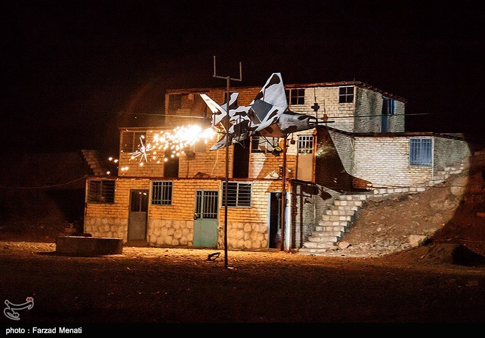
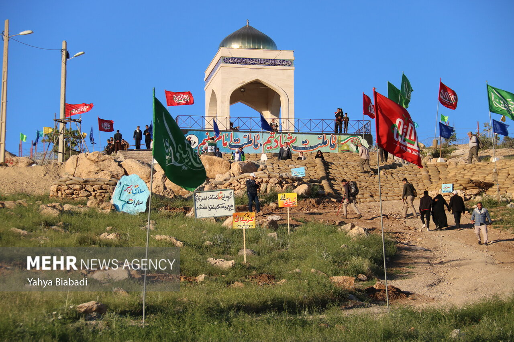
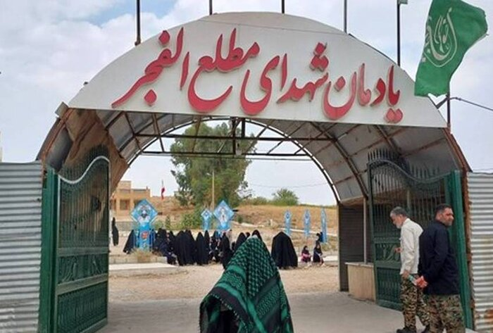
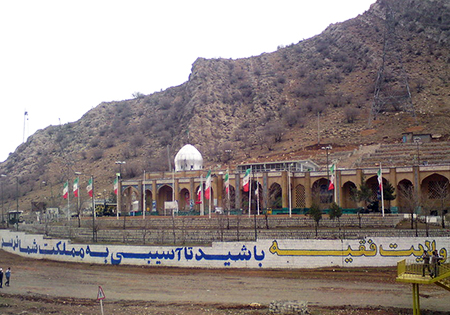
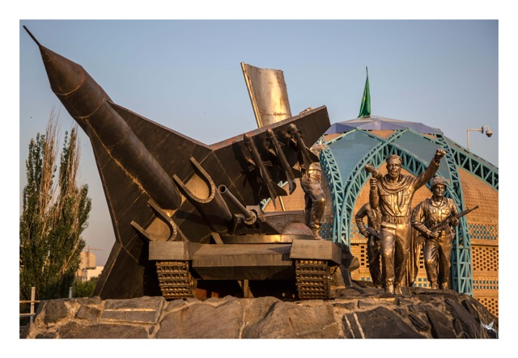

۰۱پایگاه خدمات و اسکاناستان کرمانشاه · ورودی شهر
اردوگاه توحید
پایگاه پشتیبانی و اسکان کاروانها در ورودی کرمانشاه از سمت جاده همدان؛ مناسب برای شناخت ساختار میزبانی زائران.
مشاهده جزئیات ←روایتی مستند از پنج ایستگاه در مسیر غرب؛ از اردوگاه خدماتی توحید و ارتفاعات بازیدراز تا یادمان مطلعالفجر، تنگه مرصاد و باغموزه دفاع مقدس همدان. در این راهنما، تاریخچه، موقعیت، ویژگیهای بازدید و منابع هر مقصد را یکجا بخوانید.
هر کارت را انتخاب کنید تا به معرفی تفصیلی، پیشینه تاریخی، موقعیت و نکات بازدید همان مقصد برسید.

۰۱پایگاه خدمات و اسکانپایگاه پشتیبانی و اسکان کاروانها در ورودی کرمانشاه از سمت جاده همدان؛ مناسب برای شناخت ساختار میزبانی زائران.
مشاهده جزئیات ←
۰۲ارتفاعات و یادمانارتفاعاتی راهبردی در غرب کرمانشاه؛ محل یادبود عملیات اردیبهشت ۱۳۶۰ و آرامگاه سه شهید گمنام در ارتفاعات یادمان.
مشاهده جزئیات ←
۰۳یادمان میدانییادمانی در کنار سنگرها و کانالهای حفظ و بازسازیشده؛ مرتبط با عملیات مطلعالفجر در آذر و دی ۱۳۶۰.
مشاهده جزئیات ←
۰۴یادمان عملیات مرصاددر حوالی تنگه چهارزبر و در مسیر جاده کرمانشاه؛ یادآور عملیات پنجم مرداد ۱۳۶۷ در واپسین روزهای جنگ.
مشاهده جزئیات ←
۰۵مرکز فرهنگی و موزهمجموعهای فرهنگی با گالریهای موضوعی، محوطه بیرونی، تندیسها، آثار و روایت نقش همدان در دفاع مقدس.
مشاهده جزئیات ←اطلاعات تاریخی از منابع خبری و گزارشهای محلی گردآوری شدهاند. نکات مربوط به ساعت، ظرفیت و خدمات فقط در صورت وجود گزارش مشخص درج شدهاند.
اردوگاه توحید در منابع مربوط به میزبانی زائران، بهعنوان یکی از ظرفیتهای اسکان و پشتیبانی استان کرمانشاه معرفی شده است. برخلاف سه مقصد عملیاتی این راهنما، توحید در درجه نخست یک پایگاه خدماتی برای زائران و کاروانهاست و نباید آن را با یک یادمان میدانیِ مرتبط با یک عملیات مشخص اشتباه گرفت.
در گزارشی از اجرای برنامه فرهنگی «فصل شیدایی» در کرمانشاه، محل اجرا اردوگاه توحید و نشانی آن «ورودی شهر کرمانشاه از سمت جاده همدان» ذکر شده است. گزارش دیگری از سال ۱۳۹۶، ظرفیت اعلامشده اردوگاه برای اسکان زائران اربعین را ۲۰۰۰ نفر عنوان میکند.
پیشنهاد بازدید: اگر اردوگاه در برنامه اسکان یا تجمع کاروان شما قرار دارد، پیش از حرکت از مسئول اردو یا برگزارکننده درباره فعال بودن محل، ظرفیت روز، امکانات قابل استفاده و ضوابط ورود استعلام بگیرید.
بازیدراز رشتهارتفاعاتی مرزی در غرب استان کرمانشاه است که بر بخشهایی از دشت و شهرهای پیرامونی از جمله سرپلذهاب، قصرشیرین و نفتشهر اشراف دارد. همین موقعیت جغرافیایی، ارتفاعات را در روزهای آغازین جنگ به نقطهای مهم تبدیل کرد و نیروهای عراقی از آن برای دیدهبانی و تسلط بر منطقه استفاده میکردند.
عملیات بازیدراز از یکم اردیبهشت ۱۳۶۰ آغاز شد و در گزارشهای تاریخیِ تسنیم، بازه آن تا دهم اردیبهشت همان سال ذکر شده است. این عملیات از تجربههای مهم همکاری ارتش و سپاه در جبهه غرب بود. در جریان نبرد، ارتفاعات جنوبی به تصرف نیروهای ایرانی درآمد، اما همه قلهها در همان مرحله آزاد نشدند. نقش هوانیروز در پشتیبانی عملیات برجسته بود و خلبان شهید علیاکبر شیرودی نیز در جریان همین نبرد به شهادت رسید.
در ارتفاعات یادمان، سه شهید گمنام به خاک سپرده شدهاند. گزارش تسنیم ارتفاع محل یادمان را حدود ۱۱۰۰ متر ذکر کرده است؛ بنابراین بازدید از این مقصد، ماهیتی کوهستانی دارد و شرایط آبوهوا و مسیر باید در برنامهریزی کاروان در نظر گرفته شود.
نکته بازدید: ارتفاعات را فقط در قالب مسیرهای تعیینشده و با هماهنگی مسئولان محلی یا کاروان بازدید کنید. برای صعودهای مناسبتی، زمانبندی و وضعیت راه را جداگانه استعلام کنید.
یادمان شهدای مطلعالفجر در منطقه عملیاتی گیلانغرب قرار دارد. طبق گزارش محلی، این محل در کنار روستای آوزین و در غرب گورسفید واقع شده و بخشهایی از سنگرها و کانالهای منطقه حفظ یا بازسازی شدهاند. پرچمها و مسیرهای سنگری، فضای یادمان را شکل میدهند. مزار شهید صفر خوشروان نیز در نزدیکی این محدوده قرار دارد.
عملیات مطلعالفجر در ۲۰ آذر ۱۳۶۰ با رمز «یا مهدی ادرکنی» آغاز شد و تا ۶ دی ۱۳۶۰ ادامه یافت. این عملیات با مشارکت نیروهای سپاه و ارتش و با هدف آزادسازی ارتفاعات غرب گیلانغرب و کاهش فشار دشمن بر محورهای منطقه انجام شد. در مراحل نخست، ارتفاعاتی از جمله شیاکوه و چرمیان به تصرف نیروهای ایرانی درآمد؛ با ادامه پاتکها و دشواری پشتیبانی، تثبیت همه مواضع ممکن نشد و نیروها پس از چندین روز مقاومت به مواضع پیشین بازگشتند.
چه چیزی در بازدید دیده میشود؟ سنگرها و کانالهای حفظشده یا بازسازیشده و نشانههای یادمانی منطقه. این مقصد در فضای باز قرار دارد و وضعیت آبوهوا، دسترسی جادهای و شرایط محلی میتواند بر بازدید اثر بگذارد.
یادمان مرصاد در حوالی تنگه چهارزبر و در مسیر اصلی غرب کرمانشاه قرار دارد. این تنگه به دلیل قرار گرفتن در مسیر پیشروی نیروهای سازمان مجاهدین خلق در روزهای پایانی جنگ، به محل یکی از رخدادهای سرنوشتساز تابستان ۱۳۶۷ تبدیل شد. در گزارش تصویری تسنیم در مرداد ۱۴۰۵، موقعیت یادمان حدود ۲۵ کیلومتری غرب شهر کرمانشاه و در جاده اصلی موسوم به راه کربلا معرفی شده است.
پس از پذیرش قطعنامه ۵۹۸، نیروهای سازمان مجاهدین خلق با پشتیبانی ارتش عراق در سوم مرداد ۱۳۶۷ از مرزهای غربی وارد ایران شدند و به سمت کرمانشاه پیشروی کردند. در تنگه چهارزبر، پیشروی آنها متوقف شد و عملیات مرصاد در پنجم مرداد ۱۳۶۷ با رمز «یا علیابنابیطالب(ع)» آغاز شد. این رخداد در شمار آخرین عملیاتهای بزرگ جنگ ایران و عراق قرار میگیرد.
اهمیت یادمان فقط به ثبت یک عملیات محدود نیست؛ این مکان یادآور وضعیت پیچیده روزهای پایانی جنگ، نقش مردم و نیروهای ایرانی در دفاع از منطقه و پیامدهای تصمیمهای سیاسی و نظامی آن دوره است.
پیشنهاد بازدید: در محل یادمان، ابتدا تابلوهای معرفی و توضیحات تاریخی را مطالعه کنید و برای توقف در حاشیه جاده، فقط از فضاهای مجاز و امن استفاده کنید. زمان مراسم سالانه با روزهای عادی بازدید متفاوت است.
باغموزه دفاع مقدس همدان با هدف نگهداری آثار و روایت نقش مردم و رزمندگان استان در دوران دفاع مقدس شکل گرفت. طرح ساخت مجموعه در سال ۱۳۷۶ آغاز شد و بهرهبرداری از آن در آبان ۱۳۸۹، همزمان با کنگره سرداران، امیران و هشت هزار شهید استان، آغاز شد. در گزارشهای تاریخی، وسعت مجموعه حدود ۶٫۵ هکتار عنوان شده است.
گزارش تسنیم در مهر ۱۴۰۵ از وجود شش گالری موضوعی خبر میدهد. محورهای معرفیشده شامل نقش سپاه و بسیج، مهندسی جنگ و جهاد سازندگی، نقش نیروی هوایی ارتش با تمرکز بر پایگاه سوم شکاری شهید نوژه و نقش بنیاد شهید و امور ایثارگران است. در محوطه بیرونی نیز تندیسها و سردیسها، ادوات و تجهیزات بهجامانده از جنگ، آبنمای موزیکال و یادمان نام حدود هشت هزار شهید استان معرفی شدهاند.
در بخشهای داخلی، روایت تاریخی دفاع مقدس و نقش همدان در پشتیبانی و عملیاتها ارائه میشود. همچنین گزارش مهر ۱۴۰۵ به وجود غرفهای درباره شهید حاج حسین همدانی و فضای یادمانی شهدای مدافع حرم استان اشاره میکند.
برای بازدید بهتر: برای مشاهده کامل گالریها و محوطه بیرونی زمان کافی در نظر بگیرید. اگر برنامه گروهی یا دانشآموزی دارید، درباره امکان بازدید راهنماییشده، وضعیت فعالیت آبنمای موزیکال و شرایط پذیرش گروه از مجموعه استعلام کنید.
این ترتیب، صرفاً یک الگوی کلی بر اساس موقعیت شهرهاست؛ مسیر واقعی، زمان حرکت و امکان بازدید را با توجه به مبدأ سفر و برنامه کاروان تنظیم کنید.
نکته برنامهریزی: باغموزه در شهر همدان قرار دارد؛ اردوگاه توحید در ورودی کرمانشاه از سمت جاده همدان گزارش شده است. مرصاد در غرب کرمانشاه و دو یادمان مطلعالفجر و بازیدراز در محدوده شهرستانهای گیلانغرب و سرپلذهاب هستند. ترتیب پیشنهادی بالا باید با وضعیت جادهها و مقصد نهایی گروه تطبیق داده شود.
اطلاعات خدماتی یادمانهای روباز ممکن است در روزهای عادی، مناسبتها و فصلهای مختلف تفاوت داشته باشد.
برای هر مقصد، لینک جستوجوی نقشه در همین صفحه قرار دارد. پیش از حرکت، نام مقصد را با راهنمای کاروان تطبیق دهید؛ بهویژه برای یادمانهای واقع در ارتفاعات و مسیرهای روستایی.
ساعت کاری قطعی و یکسانی برای همه یادمانهای روباز در منابع بررسیشده پیدا نشد. ساعات باغموزه همدان نیز باید در روز مراجعه دوباره استعلام شود.
برای اردوهای دانشآموزی یا کاروانی، هماهنگی قبلی با مسئول اردو، راهنمای محلی و متولی مجموعه، بهویژه درباره ظرفیت و خدمات اسکان، ضروری است.
برای بررسی جزئیات تاریخی، نشانی و تازهترین اطلاعات، گزارشهای زیر را باز کنید. تاریخ انتشار منابع در عنوان یا توضیح هر مورد مشخص شده است.
در صورت اختلاف جزئی تاریخها میان گزارشها، متن صفحه بر اساس منبعی که برای همان ادعا مشخص شده تنظیم شده است.